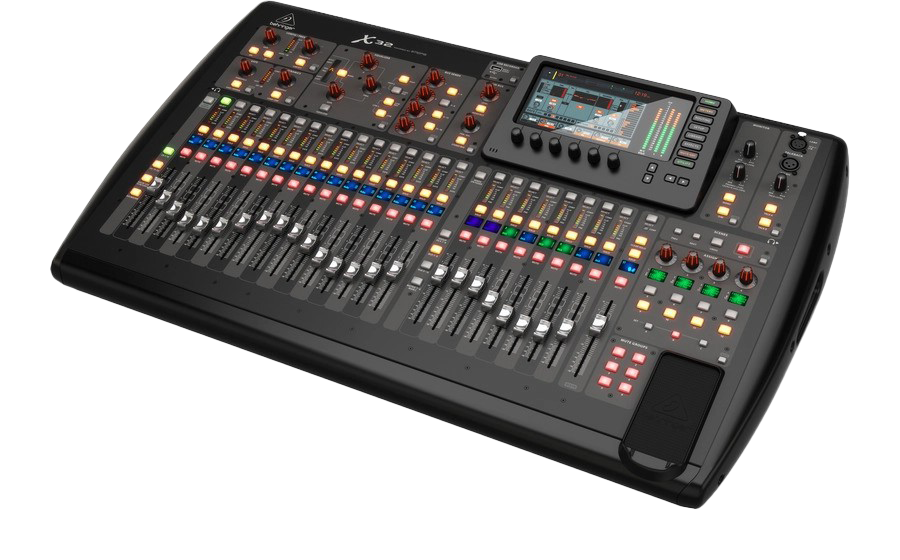

Denon Prime 4
Opis proizvoda:
Opremljen multicore procesorom, omogućava vam bazu za vasu celokupnu muzičku kolekciju, bez potrebe za laptopom. Sa hardverskom kontrolom na 4 kanala i naprednim radnim ekranom osetljivim na dodir, spremni ste za rukovanje bilo kojim DJ setom, bilo gde i bilo kada.
Karakteristike:
Supported Audio File Formats:
AAC/M4A
AIF/AIFF (44.1–192kHz, 16–32-bit)
ALAC
FLAC
MP3 (32–320 kbps, VBR)
MP4
Ogg Vorbis
WAV (44.1–192kHz, 16–32-bit)
Cena 120.000,00 din.

Behringer X32
Opis proizvoda:
Sa svojim digitalnim mikserom X32 Behringer je u potpunosti izmenio standarde digitalnih konzola a nekoliko desetina hiljada korisnika, najbolji je pokazatelj da su na pravom putu.
Karakteristike:
* 40 input channel, 25 bus digital mixing console for Studio and Live application
* 32 MIDAS designed, fully programmable mic preamps for audiophile sound quality
* 25 Fully automated motorized 100 mm faders allow for instant overview, powerful scene management and DAW control
* 16 XLR outputs plus 6 additional line in/outputs, 2 phones connectors and a talkback section with integrated or external mic
* Individual and dynamic LCD Scribble Strips on all channels and buses creating easy assignment and intuitive channel distinction
* 32 x 32 channel USB 2.0 audio interface, with DAW remote control emulating HUI
* and Mackie Control.